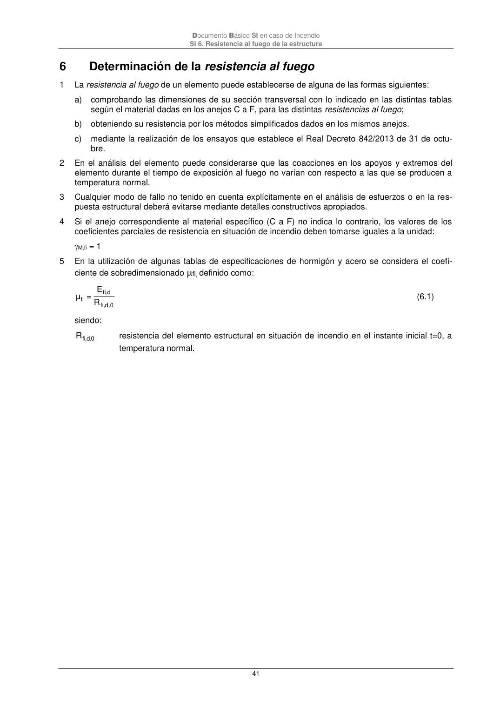

DB-SI · 6 Determinación de la resistencia al fuego · versión 2025-03-04
SHA256: 0a2e78cd62471d9cc5cfe2efbc6aa39fdbad73c124aea7b039f9de96c141e105 · página física 41 de 92 · métodos de encabezado
solo si están cotejados.
Formatos: Markdown · JSON de bloques · PDF p. 41 · imagen PNG
Documento Básico SI en caso de Incendio SI 6. Resistencia al fuego de la estructura 41 6 Determinación de la resistencia al fuego 1 La resistencia al fuego de un elemento puede establecerse de alguna de las formas siguientes: a) comprobando las dimensiones de su sección transversal con lo indicado en las distintas tablas según el material dadas en los anejos C a F, para las distintas resistencias al fuego; b) obteniendo su resistencia por los métodos simplificados dados en los mismos anejos. c) mediante la realización de los ensayos que establece el Real Decreto 842/2013 de 31 de octu- bre. 2 En el análisis del elemento puede considerarse que las coacciones en los apoyos y extremos del elemento durante el tiempo de exposición al fuego no varían con respecto a las que se producen a temperatura normal. 3 Cualquier modo de fallo no tenido en cuenta explícitamente en el análisis de esfuerzos o en la res- puesta estructural deberá evitarse mediante detalles constructivos apropiados. 4 Si el anejo correspondiente al material específico (C a F) no indica lo contrario, los valores de los coeficientes parciales de resistencia en situación de incendio deben tomarse iguales a la unidad: M,fi = 1 5 En la utilización de algunas tablas de especificaciones de hormigón y acero se considera el coefi- ciente de sobredimensionado fi, definido como: d,0 fi, d fi, fi R E = μ (6.1) siendo: 0 ,d ,fi R resistencia del elemento estructural en situación de incendio en el instante inicial t=0, a temperatura normal.
